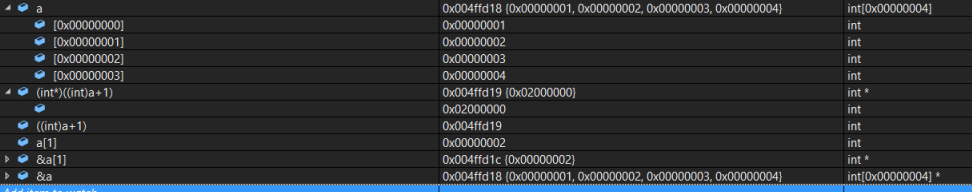
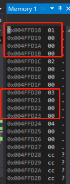

前言
看此篇文档前需要先弄清楚指针地址的强制转换和内存对齐知识
从下面这个例子引入强制转换的概念:
1 | struct test{ |
如果p 的值为0x100000。如下表表达式的值分别为多少？
1 | p + 0x01 = |
分析实例
主要的原理还是表达式“a+1”与“&a+1”之间的区别，同理，指针变量与一个整数相加减并不是用指针变量里的地址直接加减这个整数。这个整数的单位不是byte 而是元素的个数。
- Q1: p + 0x1 的值为0x100000+sizof(test)0x1。至于此结构体的大小为20byte，所以p +0x1 的值为：0x100014;
- Q2: (unsigned long)p + 0x1 的值呢？这里涉及到强制转换，将指针变量p 保存的值强制转换成无符号的长整型数。任何数值一旦被强制转换，其类型就改变了。所以这个表达式其实就是一个无符号的长整型数加上另一个整数。所以其值为:0x100001;
- Q3:(unsigned int*)p + 0x1 的值呢？这里的p 被强制转换成一个指向无符号整型的指针。所以其值为：0x100000+sizof(unsigned int)*0x1，等于0x100004;
实例解析
1 | #include <stdio.h> |
1 | The a address is 004FFD18 |
这个p1[-1]是4,是因为sizeof(a)= 16，&a+1就是a数组的末尾了
p2就是将a的地址转成int后+1=004FFD18+1=004FFD19
*p2的值应该为&a+sizeof(int)*0x01的值，我们可以通过VS查看内存布局；

由内存中数据可知当前数据的存储方式为小端模式
p2的地址是004FFD19，内存的数据是00 00 00 02，由于是小端模式，所以最后的数值是02 00 00 00
1.何为C++对象模型?
引用《深度探索C++对象模型》这本书中的话：
有两个概念可以解释C++对象模型：
1、语言中直接支持面向对象程序设计的部分。
2、对于各种支持的底层实现机制。
直接支持面向对象程序设计，包括了构造函数、析构函数、多态、虚函数等等，这些内容在很多书籍上都有讨论，也是C++最被人熟知的地方（特性）。而对象模型的底层实现机制却是很少有书籍讨论的。对象模型的底层实现机制并未标准化，不同的编译器有一定的自由来设计对象模型的实现细节。在我看来，对象模型研究的是对象在存储上的空间与时间上的更优，并对C++面向对象技术加以支持，如以虚指针、虚表机制支持多态特性。
2.文章内容简介
这篇文章主要来讨论C++对象在内存中的布局，属于第二个概念的研究范畴。而C++直接支持面向对象程序设计部分则不多讲。文章主要内容如下：
- 虚函数表解析。含有虚函数或其父类含有虚函数的类，编译器都会为其添加一个虚函数表,vptr，先了解虚函数表的构成，有助对C++对象模型的理解。
- 虚基类表解析。虚继承产生虚基类表(vbptr)，虚基类表的内容与虚函数表完全不同，我们将在讲解虚继承时介绍虚函数表。
- 对象模型概述：介绍简单对象模型、表格驱动对象模型，以及非继承情况下的C++对象模型。
- 继承下的C++对象模型。分析C++类对象在下面情形中的内存布局：
- 单继承：子类单一继承自父类，分析了子类重写父类虚函数、子类定义了新的虚函数情况下子类对象内存布局。
- 多继承：子类继承于多个父类，分析了子类重写父类虚函数、子类定义了新的虚函数情况下子类对象内存布局，同时分析了非虚继承下的菱形继承。
- 虚继承：分析了单一继承下的虚继承、多重基层下的虚继承、重复继承下的虚继承。
- 理解对象的内存布局之后，我们可以分析一些问题：
- C++封装带来的布局成本是多大？
- 由空类组成的继承层次中，每个类对象的大小是多大？
至于其他与内存有关的知识，我假设大家都有一定的了解，如内存对齐，指针操作等。本文初看可能晦涩难懂，要求读者有一定的C++基础，对概念一有一定的掌握。